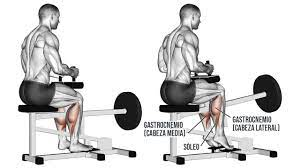
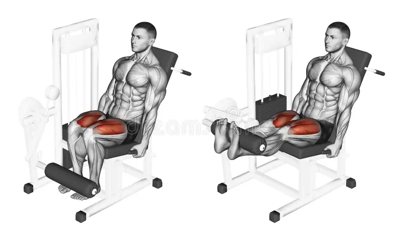
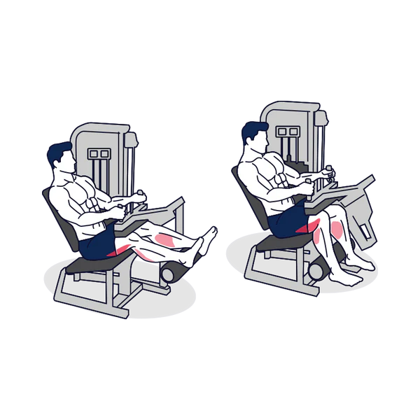
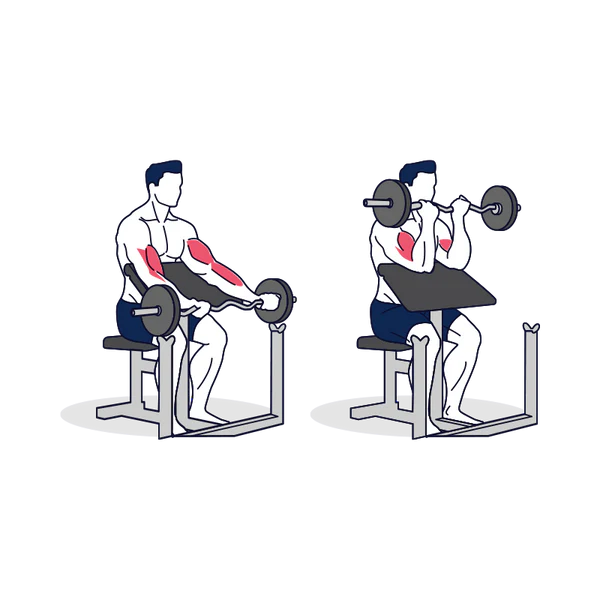
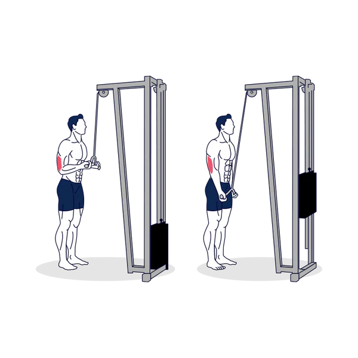
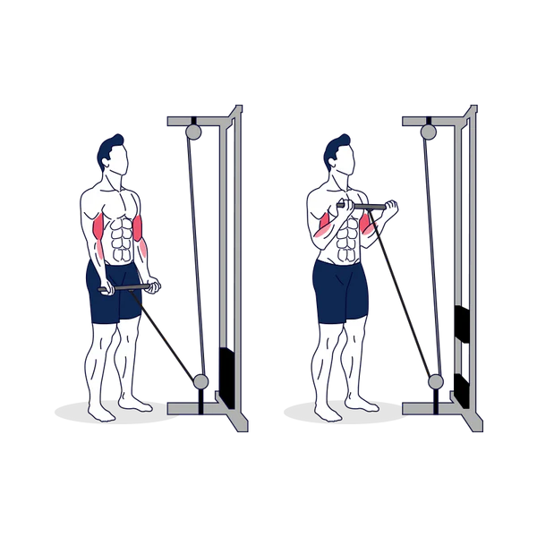
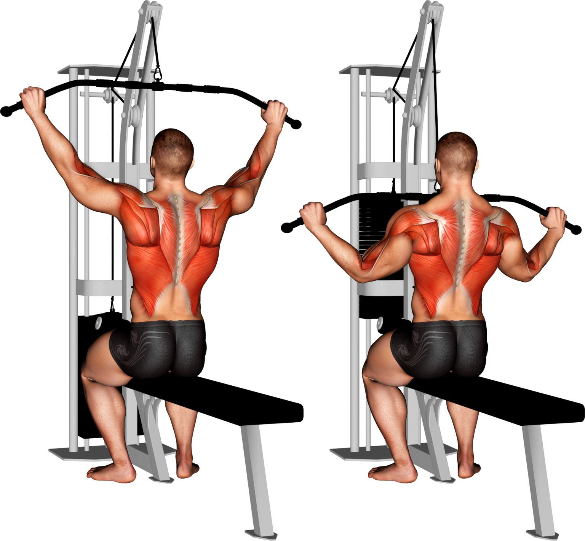
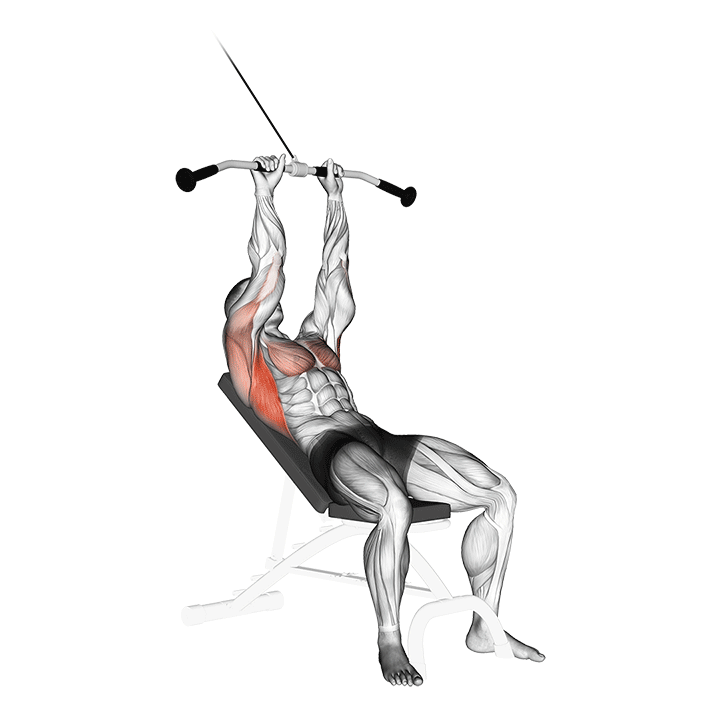
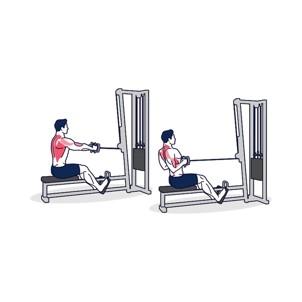

Podemos empezar eligiendo que hacer cada día, os voy a dejar una lista de que hacer cada dia y dentro de ellos especificaremos que hacer:
| Día | Entrenamiento |
|---|---|
| Lunes | Piernas |
| Martes | Brazos |
| Miércoles | Pecho |
| Jueves | Espalda |
| Viernes | Descanso |
| Sábado | Descanso |
| Domingo | Descanso |
Lunes con Piernas
En Lunes (piernas) podemos hacer estos ejercicios:
Información:
- 1. Configuración de la Máquina: Ajusta la altura del soporte para que, al meter las rodillas, tus talones ya estén en una posición de estiramiento leve. Si empiezas muy arriba, pierdes recorrido.
- 2. Posición del Pie: Apoya solo el metatarso (la "bola" del pie). Mantén los pies paralelos para un trabajo equilibrado. Si apuntas las puntas ligeramente hacia afuera, enfatizas un poco más la cara interna.
- 3. Bloqueo de Rodillas: Las almohadillas deben presionar el músculo, no el hueso. Asegúrate de que el cierre de seguridad sea fácil de quitar sin perder la postura erguida.
- 4. El core y la Estabilidad: Sujeta las asas de la máquina con firmeza. Esto ayuda a "anclar" tu pelvis al asiento, evitando que el peso te levante y asegurando que solo trabaje la pantorrilla.
- 5. Tempo 4-2-1-2 (La Clave):
- Baja en 4 segundos: Control total, sintiendo cómo se estira el tendón de Aquiles.
- Pausa 2 segundos abajo: Crucial para disipar la energía elástica y que el músculo haga todo el trabajo.
- Sube en 1 segundo: Explosivo, buscando la máxima altura.
- Aprieta 2 segundos arriba: Contracción máxima (sentirás el "quemazón").
- 6. Anatomía Aplicada: Al estar la rodilla flexionada, el gastrocnemio (gemelo alto) se desactiva, dejando que el sóleo sea el protagonista principal del movimiento.
- 7. Volumen y Sobrecarga: El sóleo tiene una alta proporción de fibras de contracción lenta. Entrénalo 2-3 veces por semana. No temas usar pesos pesados, pero siempre que logres el rango completo.
- 8. Indicadores de Error: Si sientes dolor en el arco del pie, quizás estés apoyando muy poco pie en la plataforma. Si el peso rebota, estás usando los tendones, no el músculo.
- 9. Tip Pro (Conexión): En la parte más alta del movimiento, intenta empujar no solo con los dedos, sino proyectando el tobillo hacia afuera sutilmente para una contracción más profunda.
- 10. Estiramiento Post-Serie: Al terminar cada serie, deja colgar los talones 15 segundos sin peso adicional para mejorar la movilidad del tobillo (dorsiflexión).



Martes con brazos
En Martes (brazos) podemos hacer estos ejercicios:
Información:
- 1. Curl Predicador (Aislamiento de Pico): Mantén las axilas bien apoyadas en el borde del banco. No despegues los brazos; el banco está ahí para eliminar el balanceo del cuerpo. Detén el descenso justo antes de bloquear el codo para mantener la tensión mecánica y proteger el tendón del bíceps.
- 2. Tríceps en Polea Alta (Extensión): Codos pegados a las costillas y hombros deprimidos (lejos de las orejas). Visualiza tus codos como bisagras fijas. Al final del movimiento, intenta "separar" la cuerda o extender las manos hacia afuera para una contracción lateral máxima.
- 3. Bíceps en Polea (Tensión Constante): A diferencia de las mancuernas, la polea ofrece resistencia durante todo el recorrido. Mantén los codos ligeramente adelantados respecto al torso. Al bajar, hazlo en 3 segundos (fase excéntrica) para generar más micro-roturas musculares.
- 4. Extensión de Tríceps tras nuca (Polea Baja): Codos apuntando al techo y lo más cerrados posible. Estira el brazo hacia arriba buscando el techo, no hacia adelante. Este ejercicio enfatiza la "cabeza larga" del tríceps, que es la que da el mayor volumen al brazo.
- 5. La Estabilidad es Poder: Aprieta el core y los glúteos mientras haces curls o extensiones de pie. Si tu tronco se mueve, estás restando carga al brazo y poniéndola en tu zona lumbar.
- 6. Supinación Activa (El Giro): En los ejercicios de bíceps, el giro de la muñeca (palma hacia el techo) es lo que realmente activa la función de supinación del bíceps. Hazlo con fuerza al llegar a la mitad del recorrido.
- 7. El Método de la Super-serie Antagónica: Al entrenar bíceps (flexor) seguido de tríceps (extensor), permites que un músculo se recupere activamente mientras el otro trabaja. Esto maximiza el flujo sanguíneo (la "fama" o pump) y la eficiencia del tiempo.
- 8. Rango de Repeticiones: Los brazos responden muy bien a un rango mixto. Haz los ejercicios pesados (predicador/press cerrado) a 8-10 reps, y los de polea a 12-15 reps para buscar el fallo metabólico.
- 9. Tip de Agarre: No aprietes la barra o mancuerna con excesiva fuerza innecesaria, ya que esto fatiga los antebrazos antes que los bíceps. Mantén un agarre firme pero controlado.
- 10. Error Crítico: Cortar el recorrido. Hacer "medias repeticiones" arriba o abajo solo trabaja la mitad del músculo. Estira y contrae al máximo en cada una.




Miércoles con Pecho
En Miércoles (Pecho) podemos hacer estos ejercicios:
Información:
- 1. Curl Predicador (Aislamiento de Pico): Mantén las axilas bien apoyadas en el borde del banco. No despegues los brazos; el banco está ahí para eliminar el balanceo del cuerpo. Detén el descenso justo antes de bloquear el codo para mantener la tensión mecánica y proteger el tendón del bíceps.
- 2. Tríceps en Polea Alta (Extensión): Codos pegados a las costillas y hombros deprimidos (lejos de las orejas). Visualiza tus codos como bisagras fijas. Al final del movimiento, intenta "separar" la cuerda o extender las manos hacia afuera para una contracción lateral máxima.
- 3. Bíceps en Polea (Tensión Constante): A diferencia de las mancuernas, la polea ofrece resistencia durante todo el recorrido. Mantén los codos ligeramente adelantados respecto al torso. Al bajar, hazlo en 3 segundos (fase excéntrica) para generar más micro-roturas musculares.
- 4. Extensión de Tríceps tras nuca (Polea Baja): Codos apuntando al techo y lo más cerrados posible. Estira el brazo hacia arriba buscando el techo, no hacia adelante. Este ejercicio enfatiza la "cabeza larga" del tríceps, que es la que da el mayor volumen al brazo.
- 5. La Estabilidad es Poder: Aprieta el core y los glúteos mientras haces curls o extensiones de pie. Si tu tronco se mueve, estás restando carga al brazo y poniéndola en tu zona lumbar.
- 6. Supinación Activa (El Giro): En los ejercicios de bíceps, el giro de la muñeca (palma hacia el techo) es lo que realmente activa la función de supinación del bíceps. Hazlo con fuerza al llegar a la mitad del recorrido.
- 7. El Método de la Super-serie Antagónica: Al entrenar bíceps (flexor) seguido de tríceps (extensor), permites que un músculo se recupere activamente mientras el otro trabaja. Esto maximiza el flujo sanguíneo (la "fama" o pump) y la eficiencia del tiempo.
- 8. Rango de Repeticiones: Los brazos responden muy bien a un rango mixto. Haz los ejercicios pesados (predicador/press cerrado) a 8-10 reps, y los de polea a 12-15 reps para buscar el fallo metabólico.
- 9. Tip de Agarre: No aprietes la barra o mancuerna con excesiva fuerza innecesaria, ya que esto fatiga los antebrazos antes que los bíceps. Mantén un agarre firme pero controlado.
- 10. Error Crítico: Cortar el recorrido. Hacer "medias repeticiones" arriba o abajo solo trabaja la mitad del músculo. Estira y contrae al máximo en cada una.
Jueves con espalda
En Jueves (espalda) podemos hacer estos ejercicios:
Información:
- 1. Jalón al pecho (Técnica de Ganchos): No agarres la barra con fuerza excesiva; imagina que tus manos son simples ganchos y que el movimiento nace en los codos. Tira hacia la parte superior del pecho, no detrás de la nuca, para evitar estrés innecesario en el manguito rotador.
- 2. Remo en banco inclinado (Aislamiento Total): Al tener el pecho apoyado, eliminas el balanceo del torso. Esto obliga a los dorsales y al trapecio medio a realizar todo el esfuerzo. Mantén la barbilla retraída para no tensionar el cuello.
- 3. Remo con barra (Potencia y Estabilidad): El ángulo de 45° es el punto dulce entre seguridad lumbar y activación. Tira de la barra hacia tu ombligo (no hacia el pecho) para involucrar el dorsal bajo. Mantén el core "de acero" para proteger tus discos intervertebrales.
- 4. Remo en Polea baja (Máximo Estiramiento): En la fase excéntrica (al soltar), deja que el peso "te jale" ligeramente hacia adelante para estirar el dorsal completamente, pero sin perder la curvatura natural de la espalda.
- 5. Retracción Escapular (El secreto): Antes de iniciar cualquier tirón, junta tus escápulas hacia atrás y hacia abajo. Si no haces esto, tus bíceps y hombros traseros harán la mayor parte del trabajo en lugar de tu espalda.
- 6. Variación de Agarres:
- Prono (palmas abajo): Más énfasis en el trapecio y deltoides posterior.
- Supino (palmas arriba): Mayor involucramiento del bíceps y dorsal inferior.
- Neutro (palmas enfrentadas): El más seguro para los hombros y excelente para el grosor general.
- 7. Tempo y Control: Ejecuta una fase negativa (bajada) de 3 segundos. La espalda responde increíblemente bien al "tiempo bajo tensión". Siente cómo las fibras se separan y se contraen.
- 8. Uso de Straps (Agarres): Si tu agarre falla antes que tu espalda, no dudes en usar straps. El objetivo es fatigar el dorsal, no tus antebrazos.
- 9. Tip Pro (Conexión Mente-Músculo): Cierra los ojos durante una serie ligera e imagina que tus escápulas intentan "guardarse en los bolsillos traseros del pantalón" al tirar.
- 10. Error Crítico: El "Ego Lifting". Si tienes que arquear la espalda hacia atrás para completar la repetición, el peso es excesivo y el riesgo de hernia discal aumenta exponencialmente.



